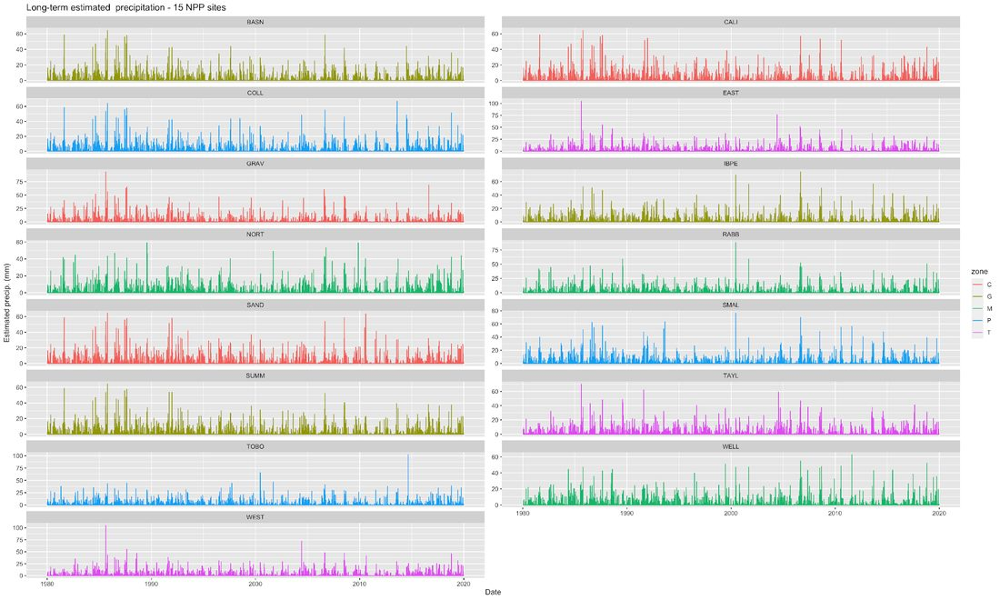
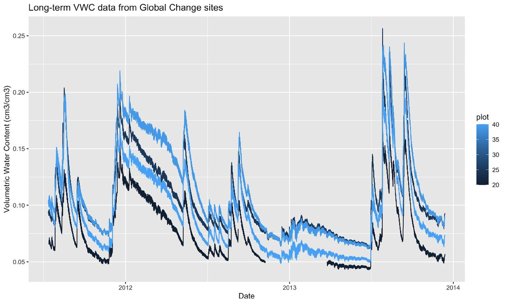
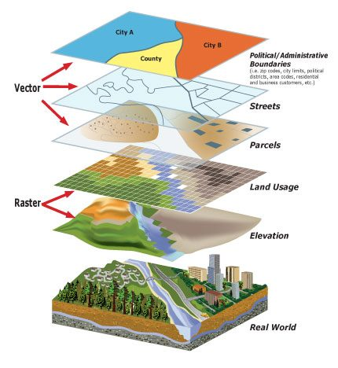
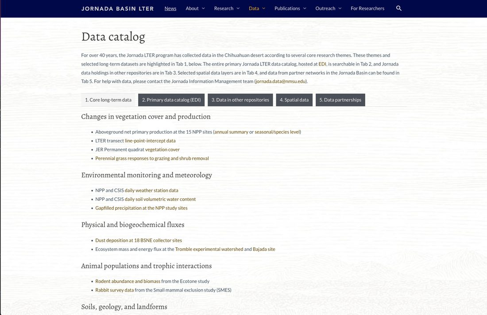
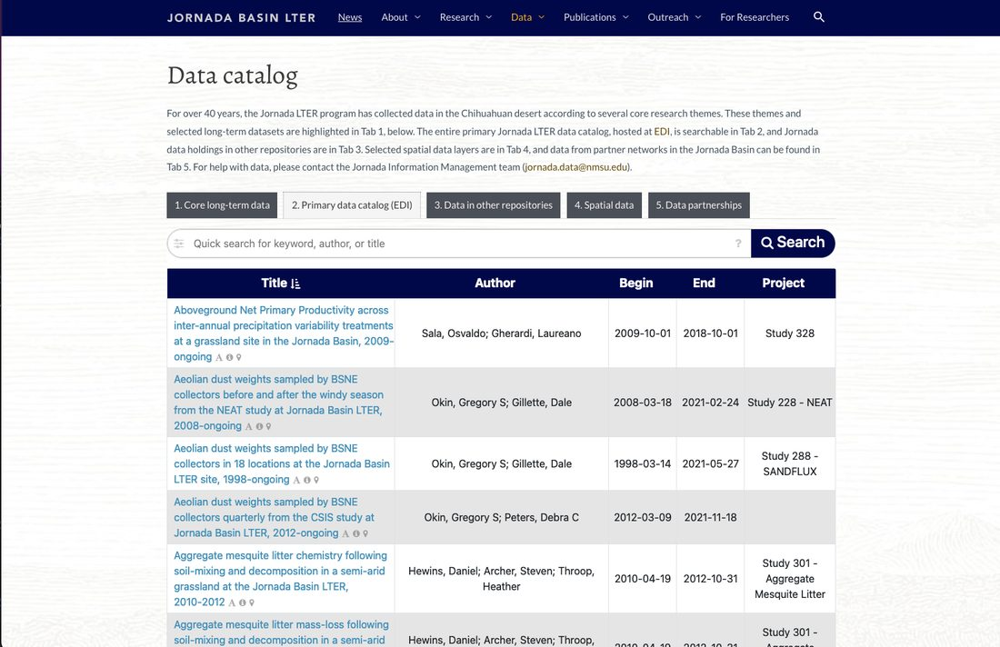
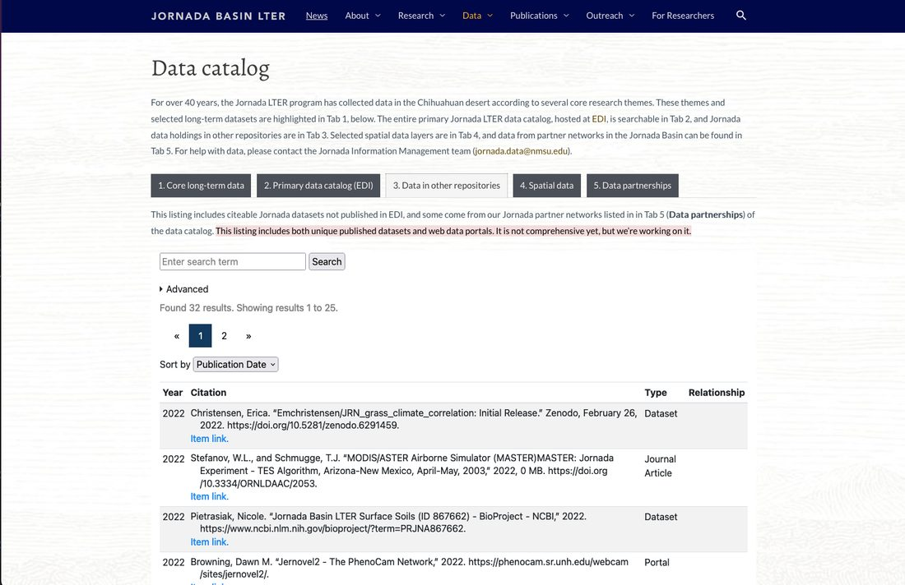
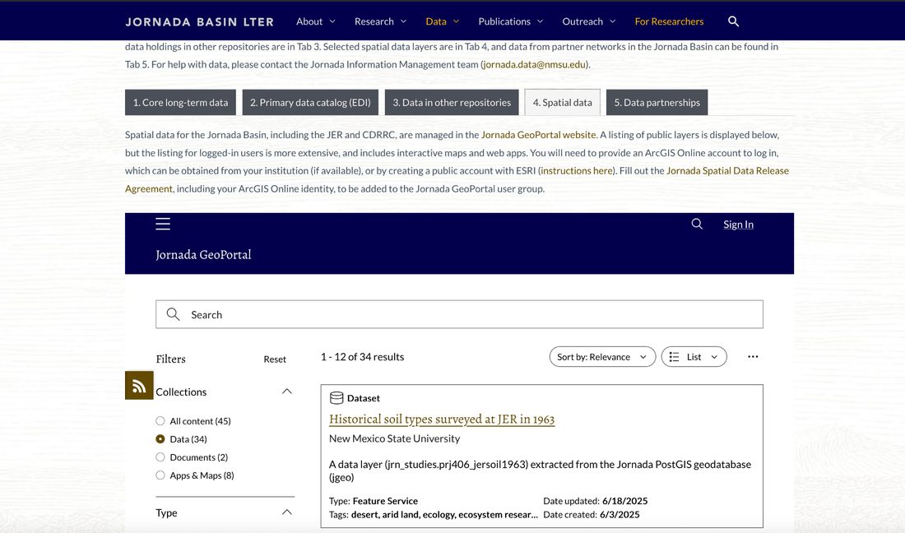
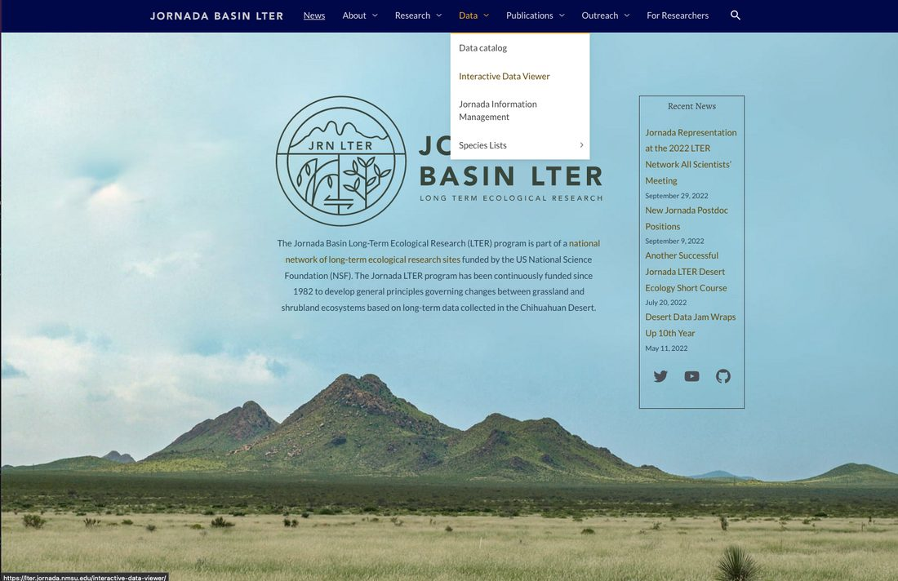
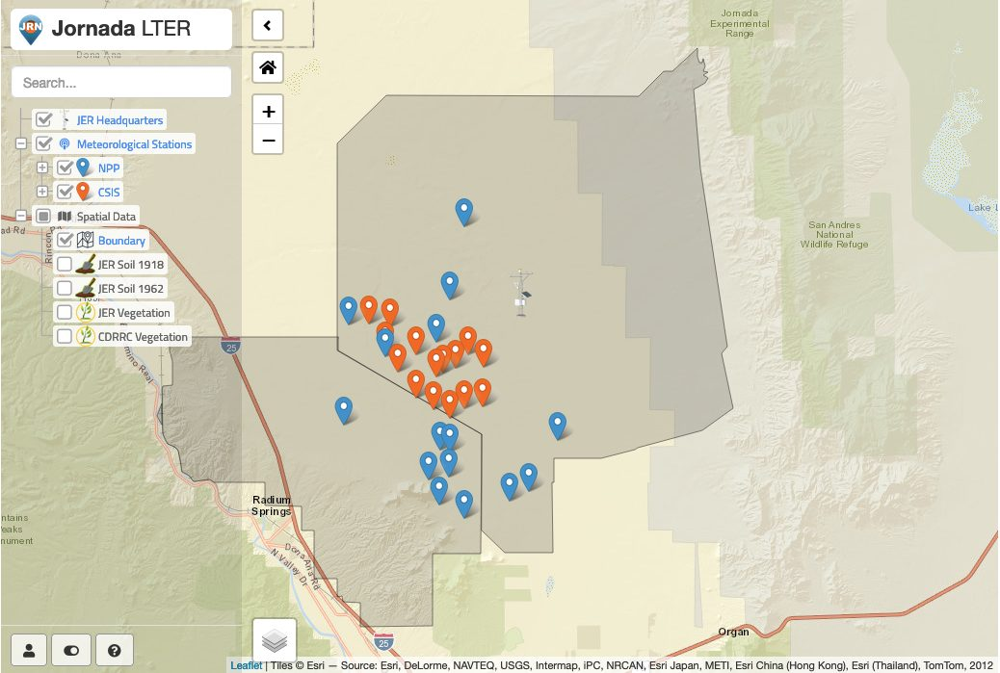
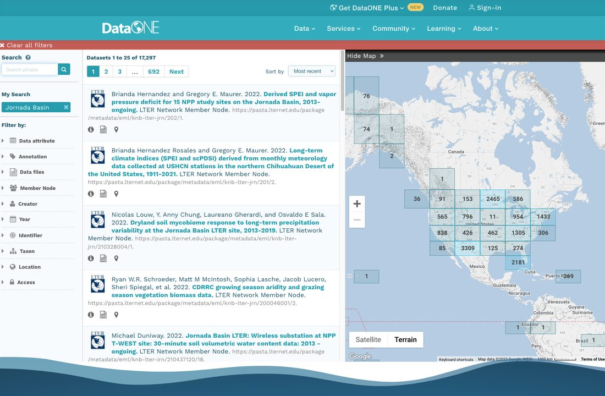

Collecting continuously since 2013, multiple frequencies
Data are regularly quality assured and sent to EDI
There are some estimated/gapfilled precipitation datasets (since 1989) too

Rain gauges
There is a very extensive rain gauge network with multiple gauge types, varying temporal records. Rain is very unevenly distributed in NM.
Monthly standard cans (cumulative)
Weighing gauges
Tipping-bucket (regular timeseries or event-based)
Best practices is to ask the field crew or IM team which rain gauge
Other meteorology data
Several wind profile weather stations
Individual experiments sometimes have their own rain gauge
Eddy covariance towers
Tromble watershed, UTEP Bajada & Red Lake Playa on AmeriFlux
JER DuRP project towers (3)
Army research lab - 30+ EC towers
Activity 1
Lets practice finding a Jornada meteorology dataset on EDI. Visit the EDI data portal - https://portal.edirepository.org - and use the search function to look for a Jornada weather or climate dataset that might be useful to you. Put the link to a dataset you found in our notes document.
Activity 1
Lets practice finding a Jornada meteorology dataset on EDI. Visit the EDI data portal - https://portal.edirepository.org - and use the search function to look for a Jornada weather or climate dataset that might be useful to you. Put the link to a dataset you found in our notes document.
NPP and CSIS sites have automated soil profile sensors (VWC, T, EC) since 2013
Long-term neutron probe data since 1989 (NPP sites and more)
Many experiments have their own instrumentation or probe data

Spatial data (GIS)
Vector and raster datasets about Jornada Basin
Research locations
What are spatial data & GIS?
(Geo)spatial data: Any data with location or geographic coordinates attached to the observation
Geographic information systems (GIS): Integrated computer hardware and software that store, manage, analyze, edit, output, and visualize geographic data

Why do we care at the Jornada?
Drylands are spatially heterogeneous
We work in a large area
We want to place our research in landscape context
Long-term data underpinning JRN LTER’s core research themes. Most of this is in EDI.

Tab 2: Primary data catalog
The full JRN LTER data catalog hosted by EDI repository. 366 datasets searchable by metadata fields here

Tab 3: Data in other repositories
Search Jornada data holdings in other repositories (Dryad, NCBI, AmeriFlux). Includes citeable datasets & portals for partner networks. “Special” data types.

Tab 4: Spatial data
Selected geospatial/GIS datasets available for download. This is a small fraction of available spatial data.

Tab 5: Data partnerships
Data from other research networks & agencies operating in the Jornada Basin. Some of these are in Tab 3 also.
We usually provide access via links to other data portals
“Data Partnerships” are listed in Tab 5 and some datasets/portals in Tab 3
We can help - let us know what you are looking for!
[DEMO – Partner data]
More ways to explore Jornada data
The Interactive data viewer
R Shiny app showing met station locations (NPP & CSIS) and providing access to “provisional” met data.

Interactive data viewer
Met data current to yesterday
Subset & download data
No QA/QC (!), but links to published data available
Good for general orientation and answering the question “Did it rain at my site yesterday?”

[DEMO – Interactive data viewer]
DataOne
Metadata aggregator
Many “member nodes”
All LTER repositories (EDI, BCO-DMO, ADC)
Dryad et al.
Some fed agency data
Standard tabular datasets
No NCBI, AmeriFlux, etc
Good for cross-site synthesis, challenging for site-specific data

Activity 3: What else is there?
What have we missed here? Form small groups and discuss the kinds of data that are most useful in your research and whether you think you can find them given the information presented today. You can make notes in the community doc.